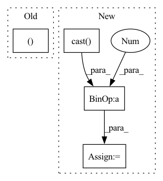

Pattern ID :41590
Before Change
def rand_translation(x, ratio=(1, 8)):
B, H, W = tf.shape(x)[0], tf.shape(x)[1], tf.shape(x)[2]
translation_x = tf.random.uniform([B, 1], -(W * ratio[0] // ratio[1]), (W * ratio[0] // ratio[1]) + 1, dtype=tf.int32)
translation_y = tf.random.uniform([B, 1], -(H * ratio[0] // ratio[1]), (H * ratio[0] // ratio[1]) + 1, dtype=tf.int32)
grid_x = tf.clip_by_value(tf.expand_dims(tf.range(W, dtype=tf.int32), 0) + translation_x + 1, 0, W + 1)After Change
def rand_translation(x, ratio=0.125):
batch_size = tf.shape(x)[0]
image_size = tf.shape(x)[1:3]
shift = tf.cast(tf.cast(image_size, tf.float32) * ratio + 0.5 , tf.int32)
translation_x = tf.random.uniform([batch_size, 1], -shift[0], shift[0] + 1, dtype=tf.int32)
translation_y = tf.random.uniform([batch_size, 1], -shift[1], shift[1] + 1, dtype=tf.int32)
grid_x = tf.clip_by_value(tf.expand_dims(tf.range(image_size[0], dtype=tf.int32), 0) + translation_x + 1, 0, image_size[0] + 1)In pattern: SUPERPATTERN
Frequency: 3
Non-data size: 4
Instances Fragment ID: 116903956
Project Name: mit-han-lab/data-efficient-gans
Commit Name: 96d6d871bf47d8dd3d280b77a5c3a01c674a7acd
Time: 2020-07-01
Author: zsyzzsoft@gmail.com
File Name: DiffAugment-stylegan2/DiffAugment_tf.py
M Class Name: AnonimousClass
N Class Name: AnonimousClass
M Method Name: rand_translation(2)
N Method Name: rand_translation(2)
M Parent Class:
N Parent Class:
M File Name: DiffAugment-stylegan2/DiffAugment_tf.py
N File Name: DiffAugment-stylegan2/DiffAugment_tf.py
M Start Line: 41
M End Line: 47
N Start Line: 41
N End Line: 49
Before Change
tmp = complex_mult(coef.unsqueeze(0), kdat, dim=1)
for bind in range(griddat.shape[0]):
for riind in range(griddat.shape[1]):
griddat[bind, riind ].index_put_(
tuple(arr_ind.unsqueeze(0)),
tmp[bind, riind],
accumulate=TrueAfter Change
centers = tf.cast(tf.floor(numpoints * L / 2), int_type)
// offset from k-space to first coef loc
kofflist = 1 + \
tf.cast( tf.floor(tm - numpoints[:, None] / 2.0), int_type)
// initialize output array
griddat = tf.zeros(
shape=(kdat.shape[0], 2, tf.reduce_prod(dims)), Fragment ID: 116903954
Project Name: zaccharieramzi/tfkbnufft
Commit Name: e1123a8893ee7aeee9593a67d2151f8d860f384a
Time: 2020-03-01
Author: zaccharie.ramzi@gmail.com
File Name: tfkbnufft/nufft/interp_functions.py
M Class Name: AnonimousClass
N Class Name: AnonimousClass
M Method Name: run_interp_back(3)
N Method Name: run_interp_back(3)
M Parent Class:
N Parent Class:
M File Name: tfkbnufft/nufft/interp_functions.py
N File Name: tfkbnufft/nufft/interp_functions.py
M Start Line: 160
M End Line: 205
N Start Line: 161
N End Line: 190
Before Change
def rand_translation(x, ratio=(1, 8)):
B, H, W = tf.shape(x)[0], tf.shape(x)[1], tf.shape(x)[2]
translation_x = tf.random.uniform([B, 1], -(W * ratio[0] // ratio[1]), (W * ratio[0] // ratio[1]) + 1, dtype=tf.int32)
translation_y = tf.random.uniform([B, 1], -(H * ratio[0] // ratio[1]), (H * ratio[0] // ratio[1]) + 1, dtype=tf.int32)
grid_x = tf.clip_by_value(tf.expand_dims(tf.range(W, dtype=tf.int32), 0) + translation_x + 1, 0, W + 1)After Change
def rand_translation(x, ratio=0.125):
batch_size = tf.shape(x)[0]
image_size = tf.shape(x)[1:3]
shift = tf.cast(tf.cast(image_size, tf.float32) * ratio + 0.5 , tf.int32)
translation_x = tf.random.uniform([batch_size, 1], -shift[0], shift[0] + 1, dtype=tf.int32)
translation_y = tf.random.uniform([batch_size, 1], -shift[1], shift[1] + 1, dtype=tf.int32)
grid_x = tf.clip_by_value(tf.expand_dims(tf.range(image_size[0], dtype=tf.int32), 0) + translation_x + 1, 0, image_size[0] + 1) Fragment ID: 116903953
Project Name: mit-han-lab/data-efficient-gans
Commit Name: 96d6d871bf47d8dd3d280b77a5c3a01c674a7acd
Time: 2020-07-01
Author: zsyzzsoft@gmail.com
File Name: DiffAugment_tf.py
M Class Name: AnonimousClass
N Class Name: AnonimousClass
M Method Name: rand_translation(2)
N Method Name: rand_translation(2)
M Parent Class:
N Parent Class:
M File Name: DiffAugment_tf.py
N File Name: DiffAugment_tf.py
M Start Line: 41
M End Line: 47
N Start Line: 41
N End Line: 49